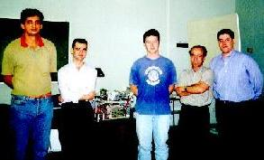
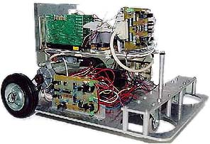
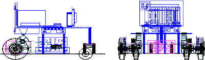
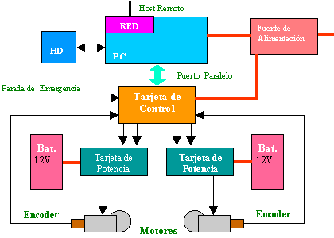
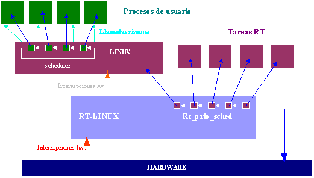
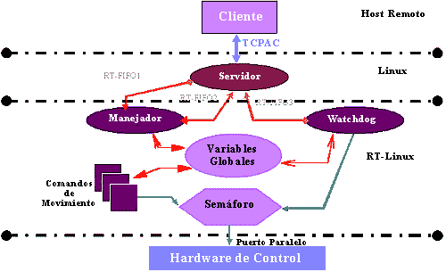
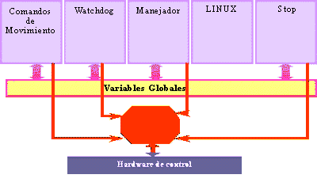

|
 Vicente Egea, Jorge Garrido, Roberto Guzmán, Ranko Zotovic Roberto Guzmán es Licenciado en Informática (Sistemas Físicos), ha sido Profesor e Investigador en el área de Robótica del Departamento de Ingeniería de Sistemas y Automática de la Universidad Politécnica de Valencia e Investigador en el Departamento de Control de Procesos y Regulación de la FernUniversitaet - Hagen (Alemania). Actualmente trabaja en el Departamento de I+D de la empresa TMC-Electronics. Ranko Zotovic es Ingeniero Industrial. Tiene varios años de experiencia en implementación y diseño de máquinas industriales como robots, máquinas herramientas, de corte, de control de calidad, etc. Ha sido investigador y actualmente es profesor de robótica y CAD/ CAM del Departamento de Ingeniería de Sistemas y Automática de la Universidad Politécnica de Valencia. Jorge Garrido Serrano es Licenciado en Informática (Sistemas Físicos). Su proyecto fin de carrera, consistente en el diseño e implementación de la arquitectura software del PCBot, ha sido galardonado con el premio Bancaja de Colaboración con Empresas. En estos momentos se dispone a integrarse como investigador en el Proyecto Europeo "MobiNet" (Mobile Robotics Technology for Health Care Research Network) de la FernUniversitaet Hagen (Alemania). Vicente Egea Mañas es Licenciado en Informática (Sistemas Físicos). Ha obtenido el Premio Bancaja de Colaboración con Empresas por el diseño e implementación de la arquitectura hardware del PCBot. Actualmente está a punto de comenzar su carrera profesional en la empresa TGI. Para contactar con el autor Índice: Introducción Descripción del Vehículo Arquitectura Software Conclusiones |
Resumen: El campo de la Robótica Móvil está teniendo un enorme crecimiento en los últimos años. Muchos departamentos de robótica, mecatrónica e inteligencia artificial han orientado gran parte de su investigación hacia los vehículos autoguiados. Hasta el momento, los elevados costes en investigación y desarrollo han limitado su uso a aplicaciones aeroespaciales, militares, centrales nucleares, etc, pero el alto nivel de desarrollo alcanzado está permitiendo su introducción en campos más comerciales como la agricultura, industria, servicios, minería, medicina, etc. Se trata de un sector estratégico, en el que se prevé un crecimiento espectacular.
Los vehículos autoguiados comerciales disponibles en la actualidad tienen una serie de inconvenientes que limitan su empleo en investigación. Entre estas cabe destacar su elevado precio, arquitectura cerrada, falta de documentación y difícil escalabilidad, tanto en hardware como en software.
Para hacer frente a esta situación, en el Departamento de Ingeniería de Sistemas y Automática se tomó la decisión de construir un vehículo autoguiado de laboratorio que careciera de los impedimentos de las plataformas comerciales. Se decidió utilizar una arquitectura basada en PC por sus enormes ventajas: precio, potencia, compatibilidad, escalabilidad, disponibilidad de software y hardware. El empleo de Linux y de su extensión de tiempo real RT-Linux ha facilitado enormemente la realización del proyecto.
|  |
| Vehículo Autoguiado PCBot 1.0 |
Se trata de un vehículo holonómico de dos ruedas motrices y dos ruedas de soporte. La cinemática es la misma que la de una silla de ruedas o un tanque, el control del centro del robot se realiza mediante el control de la velocidad de cada rueda a lo largo del tiempo.
El diseño se ha realizado diferenciando dos zonas: la parte inferior, donde se sitúan todos los elementos mecánicos y de potencia, y la parte superior donde se concentran los elementos relacionados con el control y pequeña señal. La zona inferior está montada sobre una plancha de aluminio. Este nivel comprende las ruedas, reducciones, motores, encoders, etapa de potencia, fuente de alimentación, y baterías. La zona superior va montada sobre el soporte de la placa base de un ordenador personal, donde se sitúan, además de la placa base de PC con sus correspondientes tarjetas de vídeo, de entrada/salida y de red, el disco duro, la tarjeta de control y la disquetera.
|  |
| Frente y perfil del vehículo autoguiado PCBot |
La arquitectura hardware se basa en una tarjeta de control que gobierna los motores a través de unas tarjetas de potencia. El control de los ejes puede realizarse tanto mediante la tarjeta de control como directamente desde el PC. El diseño a medida del hardware y software de estas tarjetas se ha llevado a cabo en el marco del proyecto.
|  |
| Arquitectura Hardware |
Desde un ordenador externo (host) se envían comandos al PC montado sobre el vehículo. En el caso de comandos de movimiento el PC se encarga de enviar referencias u otros comandos a las tarjetas de control. Estas generan una consigna de tensión que se amplifica en las etapas de potencia que alimentan los motores. El movimiento de cada eje es detectado por un sensor de posición (encoder), y codificado en las tarjetas de control.
La implementación de un vehículo autoguiado exige por una parte un sistema de control en bucle cerrado, que hace necesario poder garantizar que la acción de control se de en periodos de tiempo constantes. Por otra parte se necesita una actualización periódica de ciertas variables de estado, por ejemplo para determinar la posición del centro del robot en cada instante.
Las dos razones citadas implican la utilización de un sistema de tiempo real. Un sistema de tiempo real es aquel en el que la corrección del sistema no sólo depende de la corrección de los cálculos realizados, sino también del momento en el que estos se producen.
Se ha tomado la decisión de implementar la arquitectura software sobre el sistema operativo Linux (kernel 2.0.33) utilizando las extensiones para tiempo real RT-Linux (versión 0.6).
Las razones para el empleo de Linux y RT-Linux son las mismas que están llevando a algunas compañías de automatización a implementar su software sobre este sistema:
El sistema de tiempo real RT-Linux ha sido desarrollado en el departamento de informática del Instituto de Minería y Tecnología de Nuevo México por Victor Yodaiken y Michael Barabanov. Su arquitectura puede verse en la siguiente imagen. Un núcleo de tiempo real se ejecuta en el nivel más cercano al hardware. Un planificador expulsivo con prioridades estáticas gestiona una serie de tareas en tiempo real con acceso total al hardware. El propio Linux es visto por el planificador como una tarea de tiempo real más, con la prioridad más baja, que se ejecuta cuando queda tiempo disponible.
|  |
| Sistema de Tiempo Real RT-Linux |
La arquitectura software del PCBot está basada en el conocido modelo cliente-servidor. Una aplicación servidor se ejecuta sobre el robot, atendiendo las peticiones de aplicaciones cliente que se ejecutan en máquinas remotas y se comunican con el servidor a través de TCP/IP.
El uso de TCP/IP independiza al robot del sistema operativo que se ejecute en los ordenadores host. La aplicación cliente permite al usuario introducir los comandos que controlan el robot. Estos pueden ser de tres tipos: movimiento, definición de estado o consulta de estado. La aplicación cliente controla la sintaxis de los comandos introducidos, construye un mensaje apropiado para el servidor, y comunica el mensaje al servidor mediante el empleo de Sockets.
Por su parte, la aplicación servidor está permanentemente esperando conexiones por parte de aplicaciones cliente. Una vez establecida una conexión, el servidor hace de intermediario intercambiando mensajes entre la aplicación cliente y el módulo de tiempo real que ejecuta las tareas de control.
El Módulo de Tiempo Real es el encargado de ejecutar los comandos que acepta el robot, sean estos de control de movimiento, de definición del estado o de obtención del estado. Además se encarga de la supervisión de la integridad del sistema a través de una tarea periódica tipo Watchdog.
|  |
| Arquitectura Software |
La arquitectura está dividida en dos partes, una que se ejecuta sobre el sistema operativo Linux y otra cuyos requerimientos temporales obligan a ejecutarse en tiempo real (RT-Linux). En la parte de Linux encontramos el servidor implementado sobre el PC montado en el vehículo. El cliente, que es la otra aplicación sin requerimientos temporales, no necesariamente ha de encontrarse trabajando sobre el PC del robot.
El módulo de tiempo real está formado por varias tareas de tiempo real periódicas (comandos de movimiento y tarea de supervisión watchdog), y varias esporádicas (manejador y stop).
El acceso de las tareas de tiempo real al hardware está protegido por un semáforo binario. Existen varias razones para la existencia de este semáforo. En primer lugar, el protocolo de comunicación con los controladores está basado en un registro de desplazamiento, la interrupción y continuación por parte de otra tarea implica la llegada de información incorrecta a los registros. En segundo lugar, existen también protocolos a nivel de registro que no deben interrumpirse, y por último, el envío de acciones de control o comandos programados de movimiento a ambos ejes debe hacerse de la forma más simultánea posible.
La comunicación entre el módulo de tiempo real y el servidor está implementada mediante tres colas rt-fifo. El servidor hace uso de una cola para escribir en ella los comandos de movimiento que le vienen del cliente. El módulo en tiempo real utiliza las otras dos colas para informar al servidor de la aceptación de los comandos enviados y para informar al cliente a través del servidor de situaciones críticas.
Una secuencia de operación sería la siguiente: el usuario lanza un proceso cliente, cuya función es la de interfaz con el operador que introduce los comandos en línea. El cliente procesa estos comandos y los envía al servidor que los recibe y reprocesa para poder enviárselos al módulo de tiempo real a través de la cola rt-fifo asociada.
Un proceso manejador asignado a la rt-fifo se encarga de recoger el comando y si este es de movimiento lanza la tarea de tiempo real asociada, enviando un mensaje de confirmación al servidor. Esta tarea se encarga de realizar las acciones sobre el hardware necesarias para mover los motores
En caso que de no tratarse de un comando de movimiento, se tratará de un comando de definición o consulta de estado. En esta situación será el mismo manejador el que responda a la petición, bien escribiendo bien leyendo de las variables globales, según corresponda.
Las variables globales se encuentran en un espacio de memoria compartido por las tareas de tiempo real y el manejador. Sirven como medio de comunicación entre estas tareas. El watchdog se encarga de, entre otras cosas, avisar al servidor de cualquier cambio relevante en el estado del vehículo, así como de posibles situaciones anómalas.
|  |
| Arquitectura Software - Tareas del Sistema |
La arquitectura basada en PC trae una serie de ventajas como el bajo precio, facililidad de ampliación, tanto en hardware como de software, versatilidad por la gran cantidad de software disponible y potencia en cuanto a capacidad de cálculo. Además, el hardware nunca se queda obsoleto, puesto que su substitución por otro de la siguiente generación es inmediata, guardando la compatibilidad con el software anterior.
La elección del Linux junto con su extensión de tiempo real RT-Linux ha resultado ser muy acertada. Se han utilizado herramientas de desarrollo muy potentes como el entorno gnu wpe (Windows Programming Environment), o el compilador de c gnu, todo ello sin coste.
Además de haber demostrado su robustez en la práctica, el sistema aprovecha los recursos de la máquina al máximo, de manera que se ha podido utilizar como computador de a bordo una máquina 486, sin prejuicio en tiempo de ejecución ni en tiempo de desarrollo (varios usuarios en paralelo sobre esta máquina). De hecho, los análisis de planificabilidad realizados revelan la disponibilidad del 70% del tiempo de procesador aun en el peor de los casos.
La totalidad del software utilizado es de dominio público, con lo que las fuentes han sido accesibles en todo momento. Esto ha permitido una comprensión en profundidad del sistema de tiempo real y abierto nuevas posibilidades de ampliación futuras (uso de otros planificadores, desarrollo de drivers en la parte de tiempo real, etc. ), impensables en vehículos comerciales.
El sistema de tiempo real RT-Linux es fácilmente depurable en tiempo real a través de diferentes mecanismos que van desde la modificación del kernel al almacenamiento y visualización de variables mediante llamadas al sistema printk.
Para la mayor parte de los problemas surgidos durante el periodo de desarrollo se ha podido contar con el apoyo incondicional de los miembros de la lista de correo de rt-linux y con la relativamente extensa documentación disponible.
Otros artículos sobre RT-Linux aparecidos en LinuxFocus:
Real-Time Linux
Real-Time Linux II
Texto original en Castellano
|
Páginas web mantenidas por Miguel Ángel Sepúlveda © Vicente Egea, Jorge Garrido, Roberto Guzmán, Ranko Zotovic LinuxFocus 1998 |
{kind=link}